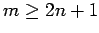
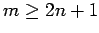

Inhalt Index DeskTop Bronstein

 Dynamische Systeme und Chaos Quantitative Beschreibung von Attraktoren Rekonstruktion der Dynamik aus Zeitreihen Grundlagen, Rekonstruktionen mit generischen Eigenschaften
Dynamische Systeme und Chaos Quantitative Beschreibung von Attraktoren Rekonstruktion der Dynamik aus Zeitreihen Grundlagen, Rekonstruktionen mit generischen Eigenschaften


Sei offen. Die C1-Abbildung heißt Immersion, falls die JACOBI-Matrix in jedem Punkt den Rang n hat. Die Immersion heißt Einbettung, wenn  die Menge U homöomorph auf abbildet ( versehen mit der Teilraumtopologie des
die Menge U homöomorph auf abbildet ( versehen mit der Teilraumtopologie des  ). Der Satz von WHITNEY sagt aus, daß bezüglich der offenen und beschränkten Menge für jedes  die Gesamtheit aller Einbettungen eine offene und dichte Teilmenge aller C1-Abbildungen bildet. Für ist
). Der Satz von WHITNEY sagt aus, daß bezüglich der offenen und beschränkten Menge für jedes  die Gesamtheit aller Einbettungen eine offene und dichte Teilmenge aller C1-Abbildungen bildet. Für ist  also generisch eine Einbettung.
also generisch eine Einbettung.